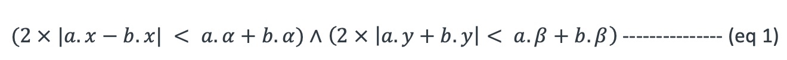
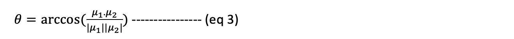
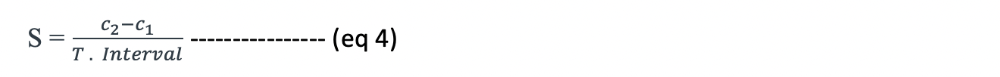

Vehicle Tracking
We need to track vehicles to understand the accidents possibility. Among all the objects detected, we retain only the correctly detected vehicles. This can be achieved by evaluating the class ids and scores from the previous step. Post identifying the vehicles in video frames, we use Centroid Tracking algorithm to track the vehicles in each subsequent video frames.
Centroid Tracking algorithm is based on Euclidean distance between centroids of two objects, which is our system are vehicles.

1. The Centroid is determined by identifying the intersection point of the lines passing from midpoint of the boundary box that was generated in Step 1.
2. Next the Euclidean distance is calculated between vehicles in the frames.
3. This process is repeated for each frame and shortest distance is identified.
4. Incase previously identified vehicles are no longer in the frame, then remove the from the set and if there are new vehicles in the frame, then add them to our object set.
This distance between two objects will be used to predict the accidents between those two vehicles. This prediction depends on:
1. Overlapping bounding boxes of vehicles: Before any collision between two vehicles, there are high chances that their bounding boxes will overlap. This can give some probability but doesn’t confirm that it is a collision as every overlap need not be a collision.
“Consider a, b to be the bounding boxes of two vehicles A and B. Let x, y be the coordinates of the centroid of a given vehicle and let α, β be the width and height of the bounding box of a vehicle respectively. At any given instance, the bounding boxes of A and B overlap, if the condition shown in Eq. 1 holds true”.
[1]

2. Trajectory of the vehicles and their angle of intersection: This is determined by measuring the difference between the centroid of the vehicles in each video frame which generates a 2D vector.
“ We then determine the magnitude of the vector, µ, as shown in Eq. 2.”
The angle of intersection for two vectors μ_1 and μ_2 of two vehicles using Eq. 3

3. Change in speed of the vehicles: We calculate the speed of the vehicles using Eq. 4

where c2 and c1 are centroids of the vehicles in subsequent frames and the Interval is the time.